{{Pentru cei care nu-ți pot spune unde-i doare.|For the ones who can’t tell you where it hurts.|Para quem não lhe sabe dizer onde dói.}}
{{Cabinet veterinar și farmacie veterinară la parterul blocului L7, lângă Piața Voievozilor. Consultații, analize, vaccinări, sterilizări și toaletare — pe aceeași ușă.|Vet clinic and pet pharmacy on the ground floor of block L7, by Piața Voievozilor. Check-ups, lab tests, vaccines, neutering and grooming — through the same door.|Clínica e farmácia veterinária no rés-do-chão do bloco L7, junto à Piața Voievozilor. Consultas, análises, vacinas, esterilizações e tosquias — pela mesma porta.}}
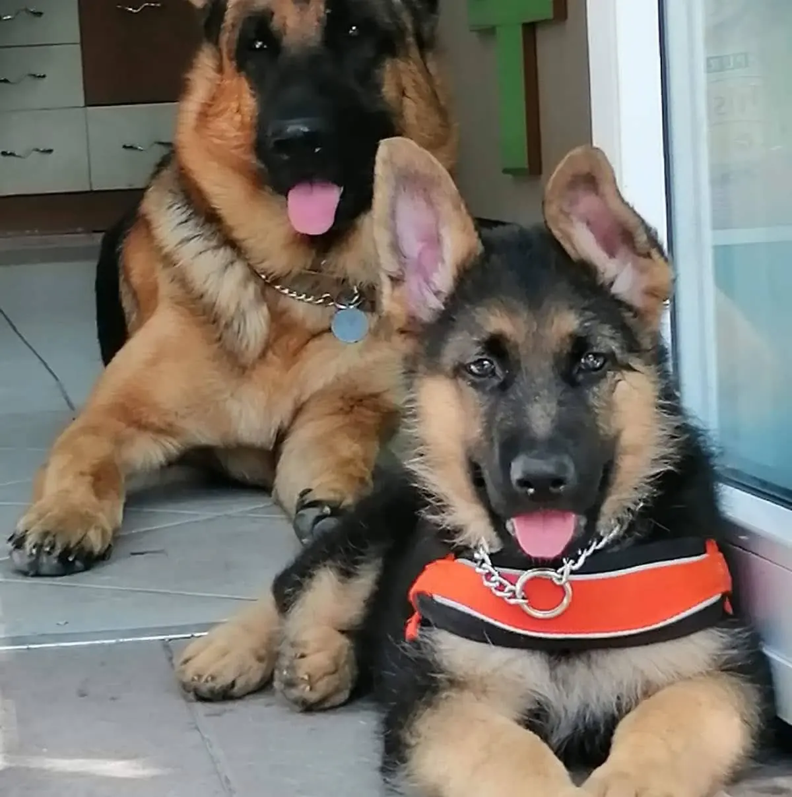
{{Scris pe vitrină, făcut înăuntru.|Written on the window, done inside.|Escrito na montra, feito lá dentro.}}
{{Exact ce scrie pe geamurile cabinetului — plus farmacia, cu hrană și accesorii pe rafturi.|Exactly what’s written on the clinic windows — plus the pharmacy, with food and accessories on the shelves.|Exatamente o que está escrito nos vidros da clínica — mais a farmácia, com ração e acessórios nas prateleiras.}}
{{183 de recenzii pe Google. Pe scurt, cam asta se repetă:|183 reviews on Google. In short, this is what keeps coming up:|183 avaliações no Google. Em resumo, é isto que se repete:}}
{{Recenzii|Reviews|Avaliações}}
- {{Atenție pentru fiecare animal în parte — chiar și când vii cu patru pisici deodată.|Attention for each animal — even when you come in with four cats at once.|Atenção a cada animal — mesmo quando se chega com quatro gatos de uma vez.}}
- {{Calm și răbdare, mai ales cu cei care vin pentru prima dată la veterinar.|Calm and patience, especially with first-timers at the vet.|Calma e paciência, sobretudo com quem vai ao veterinário pela primeira vez.}}
- {{Comunicare clară și seriozitate — doamnele doctor explică ce se întâmplă și ce urmează.|Clear communication and care — the doctors explain what’s happening and what comes next.|Comunicação clara e seriedade — as doutoras explicam o que se passa e o que vem a seguir.}}
{{Dacă e urgent, nu scrie. Sună.|If it’s urgent, don’t text. Call.|Se é urgente, não escreva. Ligue.}}
{{Sânge, respirație grea, otrăvire, un accident: sună înainte să pleci de acasă, ca să știm că veniți.|Bleeding, laboured breathing, poisoning, an accident: call before you leave home, so we know you’re coming.|Sangue, respiração difícil, envenenamento, um acidente: ligue antes de sair de casa, para sabermos que vem a caminho.}}
{{Urgențe în afara programului:|After-hours emergencies:|Urgências fora de horas:}} {{de confirmat|to be confirmed|a confirmar}}
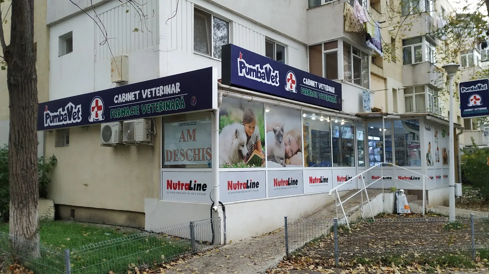
{{Firma albastră cu cruce roșie.|The blue sign with the red cross.|O letreiro azul com a cruz vermelha.}}
Aleea Basarabi 6, Bloc L7
700633 Iași
- {{Lângă Piața Voievozilor, în spatele Bulevardului Alexandru cel Bun.|By Piața Voievozilor, just behind Bulevardul Alexandru cel Bun.|Junto à Piața Voievozilor, atrás do Bulevardul Alexandru cel Bun.}}
- {{Intrare accesibilă, cu rampă — pentru cărucioare și pentru câinii mari care nu mai urcă scări.|Accessible entrance with a ramp — for wheelchairs and for big dogs that can’t manage stairs any more.|Entrada acessível, com rampa — para cadeiras de rodas e para cães grandes que já não sobem escadas.}}
- —
{{De la primul vaccin la ultima cusătură.|From the first jab to the last stitch.|Da primeira vacina ao último ponto.}}
{{Fiecare serviciu are butonul lui de programare: alegi, iar mesajul pleacă deja completat.|Each service has its own booking button: pick one and the message goes out already filled in.|Cada serviço tem o seu botão de marcação: escolhe e a mensagem sai já preenchida.}}
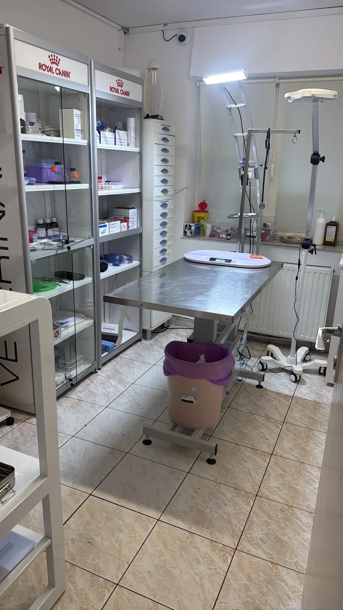
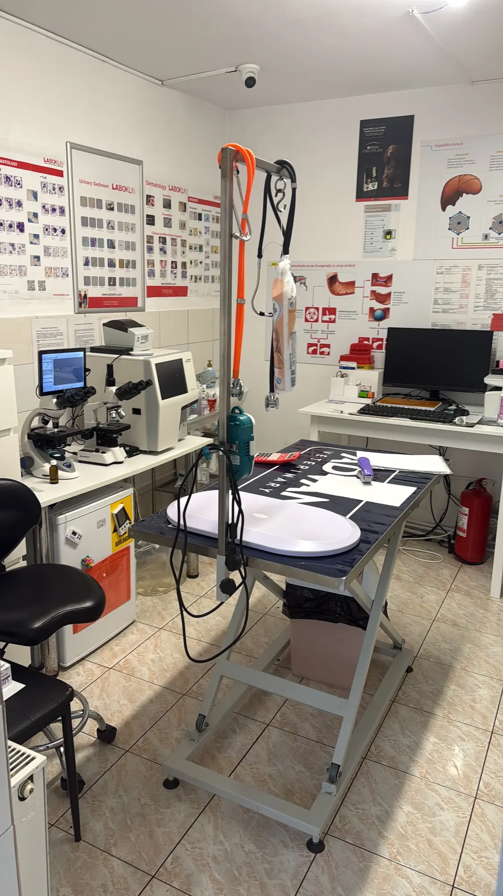
{{Ce să iei cu tine.|What to bring.|O que trazer.}}
- {{Carnetul de sănătate sau pașaportul animalului, dacă are unul.|The pet’s health booklet or passport, if it has one.|O boletim sanitário ou o passaporte do animal, se tiver.}}
- {{Lesă scurtă pentru câini, cușcă de transport pentru pisici — sala de așteptare e comună.|A short lead for dogs, a carrier for cats — the waiting room is shared.|Trela curta para cães, transportadora para gatos — a sala de espera é partilhada.}}
- {{Numele medicamentelor pe care le-a primit până acum (o poză la cutie e suficientă).|The names of any medicines it has had so far (a photo of the box is enough).|O nome dos medicamentos que já tomou (uma foto da caixa chega).}}
- {{Pentru analize sau sterilizare, întreabă la telefon dacă trebuie să vină nemâncat.|For lab tests or neutering, ask on the phone whether it should come in fasted.|Para análises ou esterilização, pergunte ao telefone se deve vir em jejum.}}
{{Rețeta și sacul de hrană, din același loc.|The prescription and the food bag, from one place.|A receita e o saco de ração, no mesmo sítio.}}
{{Medicamente, antiparazitare, hrană uscată și umedă, nisip, lese, hamuri și jucării — pe rafturile din cabinet.|Medicines, parasite treatments, dry and wet food, litter, leads, harnesses and toys — on the clinic’s shelves.|Medicamentos, desparasitantes, ração seca e húmida, areia, trelas, peitorais e brinquedos — nas prateleiras da clínica.}}
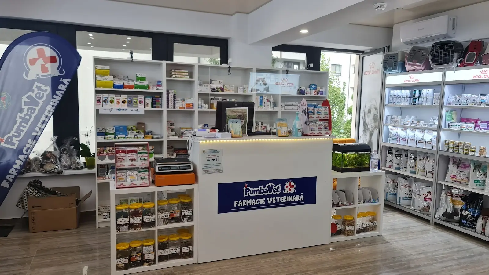
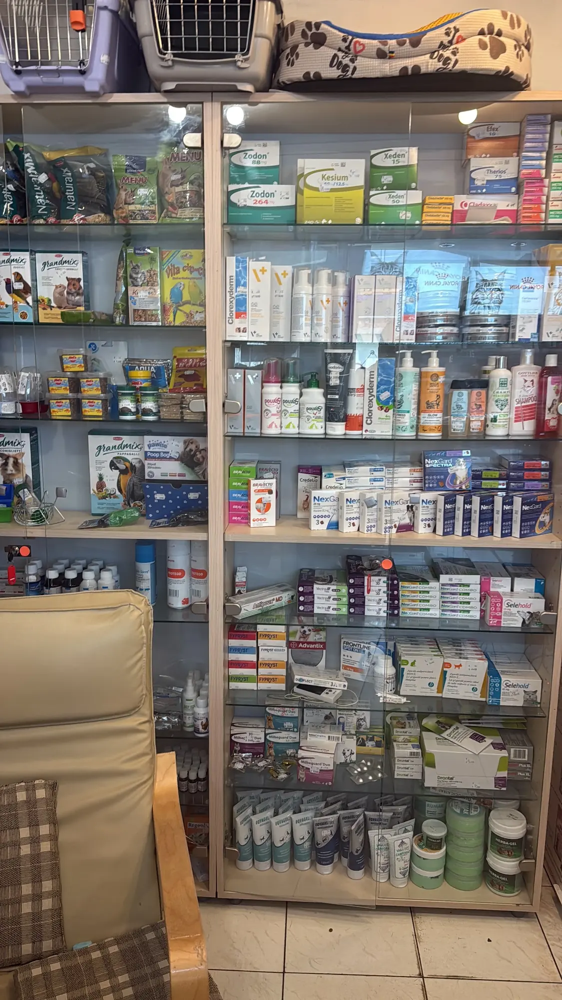
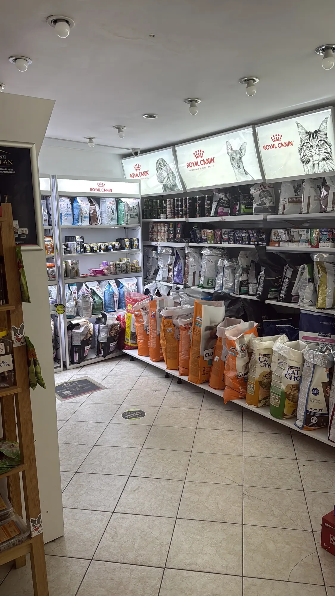
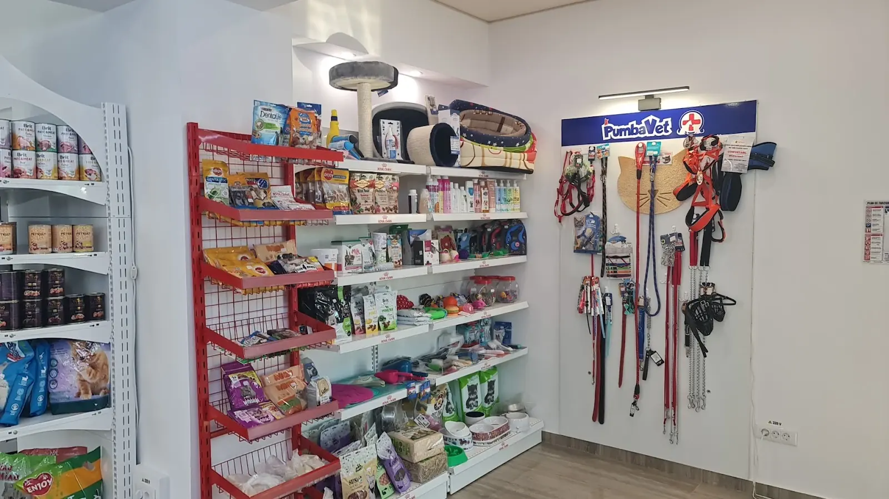
{{Ce găsești.|What you’ll find.|O que encontra.}}
{{Stocul se schimbă; dacă vrei ceva anume, întreabă înainte să vii.|Stock changes; if you want something specific, ask before you come.|O stock muda; se procura algo em concreto, pergunte antes de vir.}} {{prețuri de confirmat|prices to be confirmed|preços a confirmar}}
{{Halate cu lăbuțe și răbdare multă.|Paw-print scrubs and plenty of patience.|Batas com patinhas e muita paciência.}}
{{Un cabinet de cartier: aceeași echipă, aceleași fețe, animale care ajung să nu se mai teamă de ușă.|A neighbourhood clinic: the same team, the same faces, pets that stop being scared of the door.|Uma clínica de bairro: a mesma equipa, as mesmas caras, animais que deixam de ter medo da porta.}}
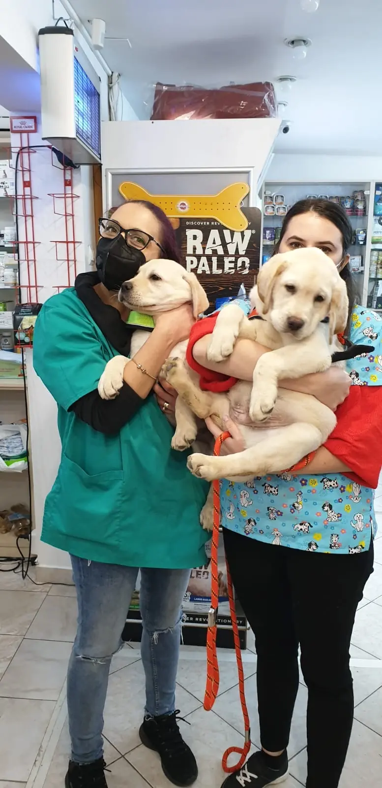
{{Doamnele doctor.|The doctors.|As doutoras.}}
{{Oamenii care scriu recenzii le spun simplu „doamnele doctor”. Le cunosc animalele pe nume și explică pe înțeles ce urmează.|People writing reviews simply call them “the lady doctors”. They know the animals by name and explain plainly what comes next.|Quem escreve avaliações chama-lhes simplesmente “as senhoras doutoras”. Sabem o nome dos animais e explicam claramente o que vem a seguir.}}
{{Numele și specializările medicilor:|Names and specialisms of the vets:|Nomes e especialidades das veterinárias:}} {{de confirmat|to be confirmed|a confirmar}}
- {{Cabinet medical veterinar și farmacie veterinară în același spațiu.|Vet clinic and pet pharmacy in the same space.|Clínica veterinária e farmácia veterinária no mesmo espaço.}}
- {{Sală de consultații separată, colț de analize cu microscop.|Separate consulting room, lab corner with a microscope.|Sala de consultas separada, canto de análises com microscópio.}}
- {{Deschis și sâmbăta, și duminica dimineața.|Open on Saturdays and on Sunday mornings too.|Aberto também ao sábado e ao domingo de manhã.}}
- {{Intrare cu rampă.|Step-free entrance with a ramp.|Entrada com rampa.}}
{{Cum arată.|What it looks like.|Como é.}}
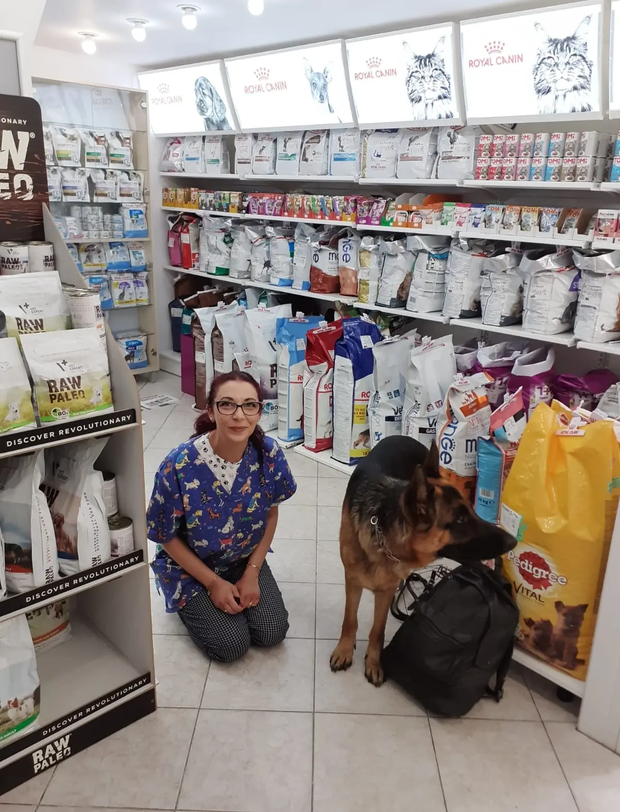
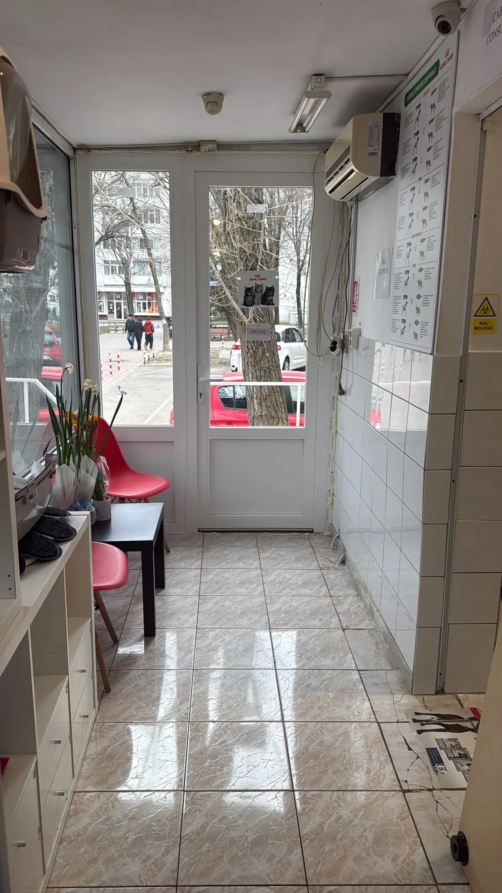
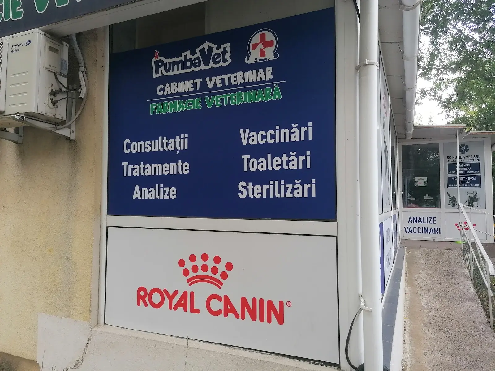
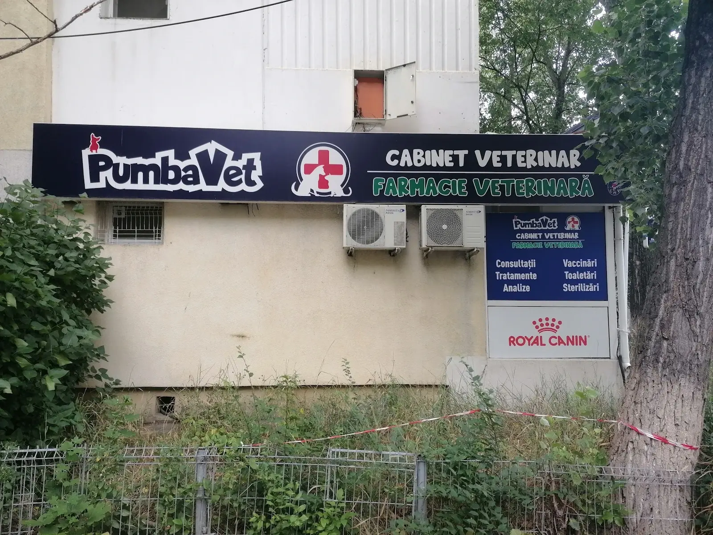
{{Trei atingeri și ai programarea scrisă.|Three taps and your booking is written.|Três toques e a marcação fica escrita.}}
{{Alegi animalul, motivul și ziua. Mesajul se scrie singur; îl trimiți pe WhatsApp sau prin SMS, iar cabinetul îți confirmă ora.|Pick the animal, the reason and the day. The message writes itself; send it by WhatsApp or SMS and the clinic confirms the time.|Escolha o animal, o motivo e o dia. A mensagem escreve-se sozinha; envie por WhatsApp ou SMS e a clínica confirma a hora.}}
{{Aleea Basarabi 6, la parterul blocului L7.|Aleea Basarabi 6, ground floor of block L7.|Aleea Basarabi 6, rés-do-chão do bloco L7.}}
{{Firma albastră cu cruce roșie, între copaci, lângă Piața Voievozilor.|Blue sign with a red cross, among the trees, by Piața Voievozilor.|Letreiro azul com cruz vermelha, entre as árvores, junto à Piața Voievozilor.}}
{{Program|Opening hours|Horário}}
{{Telefon și mesaje|Phone and messages|Telefone e mensagens}}
Facebook: «Cabinet Pumbavet» · {{e-mail:|e-mail:|e-mail:}} {{de confirmat|to be confirmed|a confirmar}}